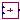
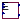
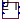

Solar PV models with DIgSILENT implementation
Extends from Modelica.Icons.Package (Icon for standard packages).
| Name | Description |
|---|---|
| PV_Plant | DIgSILENT model of a solar plant |
| Auxiliary | Auxiliary models for implementation of DIgSILENT models |
| Controller | Controller for the solar plant |
|  DCBusBar | Model of a DC busbar between the module and inverter |
|  PVArray | Array of PV modules |
|  PVModule | Model of a single PV module |
| CurrentLimiter | Limiter of d- and q-axis currents |
DIgSILENT model of a solar plant
A PV Plant implemented according to the DIgSILENT template in PowerFactory.
NOTE 1: The PLL Dynamics are missing along with the active power reduction models for FRT events.
NOTE 2: Keep in mind that if external irradiance is connected it needs to be matched for the initial active power for steady-state initialization.
Extends from OpenIPSL.Electrical.Essentials.pfComponent (Partial model containing all the parameters for entering power flow data).
| Name | Description |
|---|---|
| Power flow data | |
| S_b | System base power [V.A] |
| V_b | Base voltage of the bus [V] |
| fn | System frequency [Hz] |
| P_0 | Initial active power [W] |
| Q_0 | Initial reactive power [var] |
| v_0 | Initial voltage magnitude [1] |
| angle_0 | Initial voltage angle [rad] |
| displayPF | Display power flow: |
| Plant parameters | |
| M_b | PV plant base power [V.A] |
| PV Array Dimensions | |
| n_series | Number of modules in series |
| n_parallel | Number of modules in parallel |
| Parameters of PV Modules | |
| Tr | Time constant of modules [s] |
| U0_stc | Open-circuit voltage at Standard Test Conditions [V] |
| Umpp_stc | MPP voltage at Standard Test Conditions [V] |
| Impp_stc | MPP current at Standard Test Conditions [A] |
| Isc_stc | Short-circuit current at Standard Test Conditions [A] |
| au | Temperature correction factor (voltage) [1/K] |
| ai | Temperature correction factor (current) [1/K] |
| DC busbar parameters | |
| C | Capacity of capacitor on DC busbar [F] |
| Current Controller Parameters | |
| Kp | Gain, Active Power PI-Controller |
| Tip | Integration Time Constant, Active Power PI-Ctrl. [s] |
| Trm | Measurement Delay [s] |
| Tmpp | Time Delay MPP-Tracking [s] |
| id_min | Min. Active Current Limit [1] |
| id_max | Max. Active Current Limit [1] |
| U_min | Minimal allowed DC-voltage [V] |
| iq_min | Min. Reactive Current Limit [1] |
| iq_max | Max. Reactive Current Limit [1] |
| Deadband | Deadband for Dynamic AC Voltage Support |
| K_FRT | Gain for Dynamic AC Voltage Support |
| i_EEG | false = acc. TC2007; true = acc. SDLWindV |
| maxAbsCur | Max. allowed absolute current [1] |
| maxIq | Max.abs reactive current in normal operation [1] |
| Parameter mask | |
| enableS_b | Enable S_b in parameter list |
| enableV_b | Enable V_b in parameter list |
| enablefn | Enable fn in parameter list |
| enableP_0 | Enable P_0 in parameter list |
| enableQ_0 | Enable Q_0 in parameter list |
| enablev_0 | Enable v_0 in parameter list |
| enableangle_0 | Enable angle_0 in parameter list |
| enabledisplayPF | Enable displayPF in parameter list |
| Name | Description |
|---|---|
| p |
Controller for the solar plant
Controller for DIgSILENT's implementation of the PV plant.
| Name | Description |
|---|---|
| Kp | Gain, Active Power PI-Controller |
| Tip | Integration Time Constant, Active Power PI-Ctrl. [s] |
| Tr | Measurement Delay [s] |
| Tmpp | Time Delay MPP-Tracking [s] |
| id_min | Min. Active Current Limit [1] |
| id_max | Max. Active Current Limit [1] |
| U_min | Minimal allowed DC-voltage [V] |
| iq_min | Min. Reactive Current Limit |
| iq_max | Max. Reactive Current Limit |
| Deadband | Deadband for Dynamic AC Voltage Support |
| K_FRT | Gain for Dynamic AC Voltage Support |
| i_EEG | false = acc. TC2007; true = acc. SDLWindV |
| maxAbsCur | Max. allowed absolute current [1] |
| maxIq | Max.abs reactive current in normal operation [1] |
| uac0 | Initial voltage magnitude [1] |
| iq0 | Initial q-axis current [1] |
| id0 | Initial d-axis current [1] |
| Name | Description |
|---|---|
| vdcref | |
| uac | |
| pred | |
| vdcin | |
| id_ref | |
| iq_ref |
Model of a DC busbar between the module and inverter
DC busbar model for DIgSILENT's implementation of the PV plant.
| Name | Description |
|---|---|
| C | Capacity of capacitor on DC busbar [F] |
| Name | Description |
|---|---|
| P_conv | |
| I_pv | current array |
| Udc |
Array of PV modules
Model of a PV Array used in DIgSILENT's implementation of the PV plant. Provides optional inputs of irradiance (E) and temperature (theta). If those inputs are not connected, the model set temperature to 25 °C and irradiance so that it matches the specified initial power production.
| Name | Description |
|---|---|
| P_init | Initial active power of the array [W] |
| use_input_E | |
| use_input_theta | |
| PV Array Dimensions | |
| n_series | Number of modules in series |
| n_parallel | Number of modules in parallel |
| Parameters of PV Modules | |
| Tr | Time constant of modules [s] |
| U0_stc | Open-circuit voltage at Standard Test Conditions [V] |
| Umpp_stc | MPP voltage at Standard Test Conditions [V] |
| Impp_stc | MPP current at Standard Test Conditions [A] |
| Isc_stc | Short-circuit current at Standard Test Conditions [A] |
| au | Temperature correction factor (voltage) [1/K] |
| ai | Temperature correction factor (current) [1/K] |
| Name | Description |
|---|---|
| Iarray | |
| Vmpp_array | |
| Uarray | |
| E | |
| theta |
Model of a single PV module
Model of a PV Module within a PV array.
| Name | Description |
|---|---|
| U0_stc | Open-circuit voltage at Standard Test Conditions [V] |
| Umpp_stc | MPP voltage at Standard Test Conditions [V] |
| Impp_stc | MPP current at Standard Test Conditions [A] |
| Isc_stc | Short-circuit current at Standard Test Conditions [A] |
| au | Temperature correction factor (voltage) [1/K] |
| ai | Temperature correction factor (current) [1/K] |
| use_input_E | If true irradiance is used as input |
| use_input_theta | If true temperature is used as input |
| P_init | Initial active power (needed only if input E is not used) [W] |
| E_STC | [W/m2] |
| theta_STC | [K] |
| Name | Description |
|---|---|
| U | |
| E | |
| theta | |
| I | |
| Umpp |
Limiter of d- and q-axis currents
| Name | Description |
|---|---|
| maxAbsCur | [1] |
| maxIq | [1] |
| Deadband | [1] |
| i_EEG |
| Name | Description |
|---|---|
| idin | |
| iqin | |
| duac | |
| idout | |
| iqout |